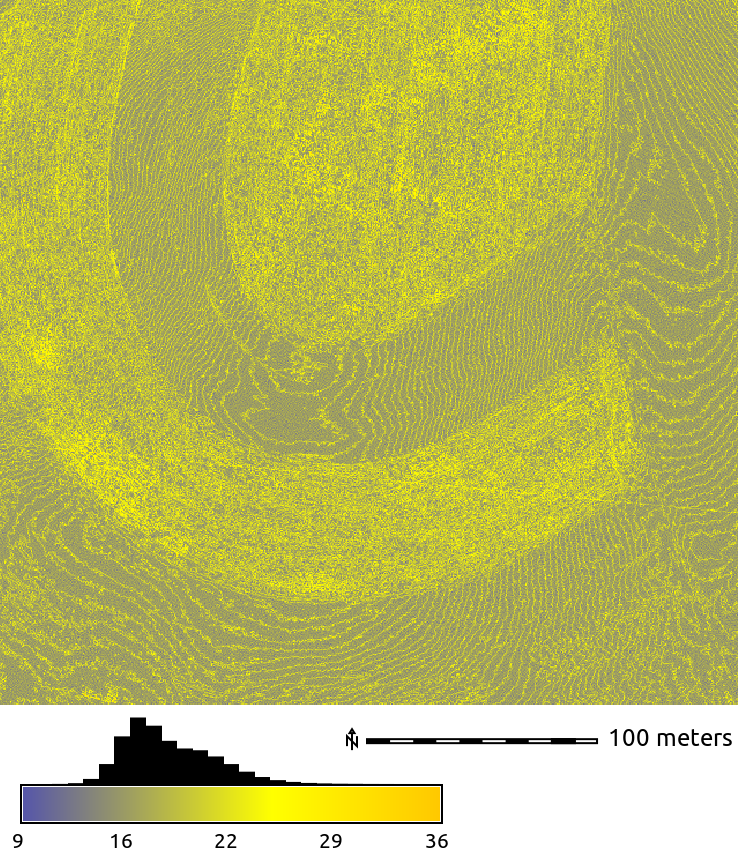
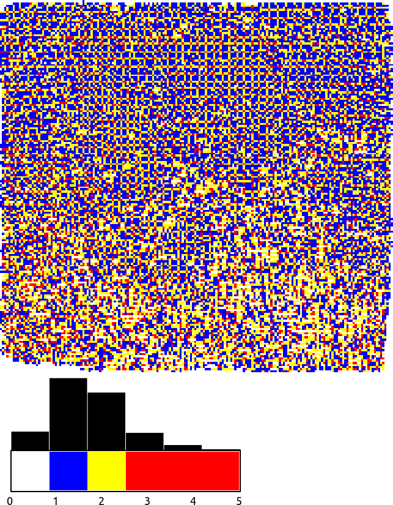
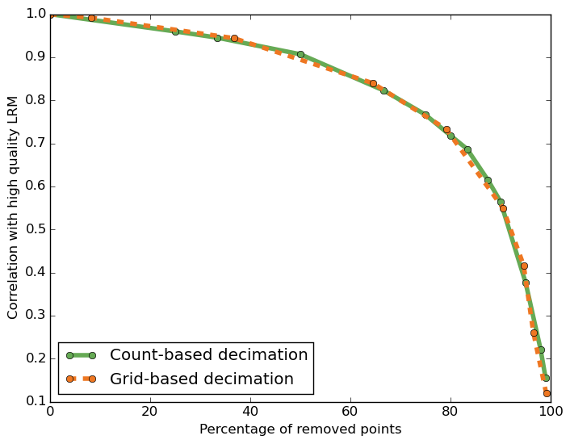
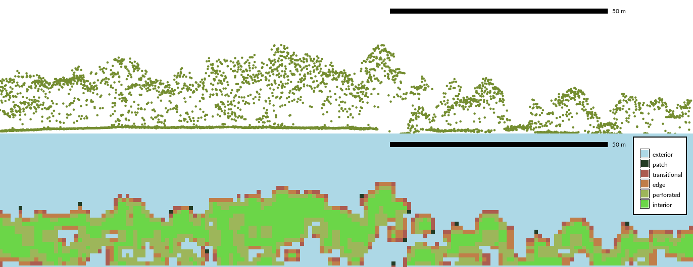
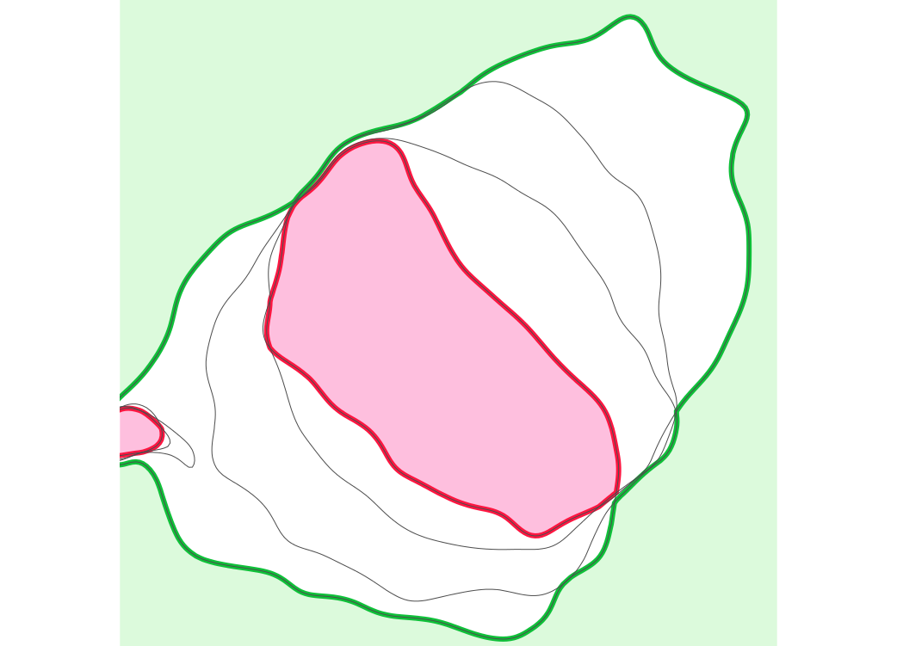
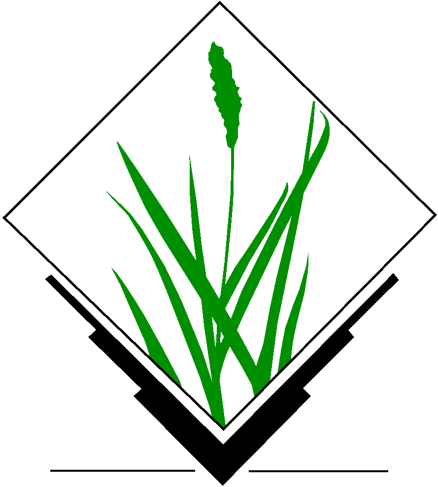
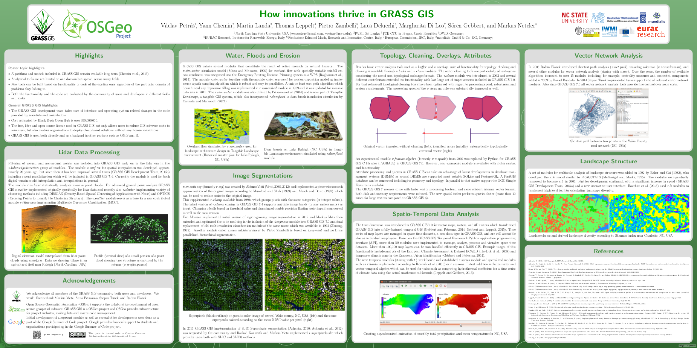
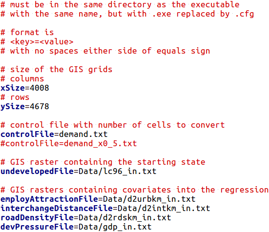

Geospatial analytics
for point clouds and dynamic surfaces
in an open science framework
Vaclav Petras
NCSU
GeoForAll Lab
at
Center for Geospatial Analytics
September 11, 2017
Overview
- Learning about point cloud density and its anomalies
- Processing point clouds while dealing with high density
- Describing terrain changes using time-series of surfaces
- Describing vegetation using lidar point cloud in three dimensions
- Publishing the results in a reproducible way
Chapter 1
Density anomalies in point clouds
Lidar and UAV point clouds
- flood modeling
- wildfire fuel assessment
- habitat identification

Density anomalies
detail of an end of scan line
Density anomalies

point density in swath overlap
Density anomalies

classified group point density in swath overlap
Density anomalies

point distribution in UAV point cloud
Density anomalies

influence of vegetation on point distribution
Planned publication
Petras, V., ... Density anomalies in lidar and UAV point clouds.Target journal(s): Remote Sensing of Environment or GIScience & Remote Sensing
Chapter 2
Homogenization and decimation of point clouds
Point density for airborne lidar

raster resolution 1.5 m
Point density for ground-based lidar

raster resolution 0.5 m, red color used for 80 to 18 thousand points per cell
Point density for UAV imagery SfM point cloud
raster resolution 0.5 m
Point density for Kinect point cloud
0.37 m × 0.35 m, raster resolution 0.002 m
Decimation
- decimation ~ thinning ~ sampling
- makes the point cloud smaller, more manageable
- may remove variations in point density
- grid-based decimation ~ binning


count-based decimation effect
Decimation
- decimation ~ thinning ~ sampling
- makes the point cloud smaller, more manageable
- may remove variations in point density
- grid-based decimation ~ binning

grid-based decimation effect
Questions
- Which decimation performs better for topography and micro-topography? How this changes with the point cloud acquisition method?
- Is the simplest decimations enough? Or do we need to use slower but more sophisticated techniques?
Evaluating level of detail
- local relief model (LRM)
- micro-topography, features other than trend


30-60cm wide, 30cm deep, 60m long gully (resolution 30cm)
Influence of grid-based decimation resolution


 grid size: 0.1 m → 0.3 m → 0.9 m → 1.5 m
grid size: 0.1 m → 0.3 m → 0.9 m → 1.5 m
(points removed: 0 % → 81 % → 98 % → 99 %)
Removing points
Airborne lidar
- count-based and grid-based decimations are equivalent

Ground-based lidar
- grid-based decimation performs better

Contributions
- significant decimation possible
- faster and simple count-based decimation more advantageous
- grid-based decimation needed for specific cases
- simple decimations are sufficient, but complex decimation have their place
Publication
Petras, V., A. Petrasova, J. Jeziorska, and H. Mitasova (2016). Processing UAV and lidar point clouds in GRASS GIS. In: ISPRS-International Archives of the Photogrammetry, Remote Sensing and Spatial Information Sciences, pp. 945–952. DOI:10.5194/isprs-archives-XLI-B7-945-2016[560 reads on ResearchGate, Sep 8, 2018]

Software
- extended GRASS GIS module for binning (r.in.lidar)
- created GRASS GIS module for binning in 3D (r3.in.lidar)
- created module for count- and grid-based decimation (v.decimate)
- extended GRASS GIS module for point cloud import (v.in.lidar)
- local relief model implementation for GRASS GIS (r.local.relief)
- point cloud transect (v.profile.points)
- under development: tool which performs the tests done in the paper

Educational material
Processing lidar and UAV point clouds in GRASS GIS
available online
(and translated to Spanish by GRASS GIS community).
Training
Workshop at FOSS4G 2017 in Boston,Center for Geographic Analysis, Harvard University.
Chapter 3
Description of 3D structure in lidar point clouds
Point cloud
3D raster

Questions
- How to derive and describe 3D structure captured in lidar point clouds?
- Is a 2D landscape index extensible and applicable to 3D vegetation structure?
- Is 3D raster representation appropriate for lidar data analysis?
Point cloud and index profiles
slice of raw point cloud and slice of fragmentation index 3D raster
Point presence and index profiles

slice of point presence 3D raster and slice of fragmentation index 3D raster
Profile of 3D raster

As 2D raster

Publication
Petras, V., D. J. Newcomb, and H. Mitasova. 2017. Generalized 3D fragmentation index derived from lidar point clouds. In: Open Geospatial Data, Software and Standards. DOI:10.1186/s40965-017-0021-8[Accessed 613 times at SpringerOpen, Sep 8, 2017]

Software
- 3D fragmentation index module (r3.forestfrag)
- revised 2D fragmentation index module (r.forestfrag)
- count categories in vertical direction (r3.count.categories)
- profile/slice of a 3D raster (r3.profile)
- 3D scatter plot of 3D raster (r3.scatterplot)
- 3D scatter plot of 2D raster (r.scatterplot)

Chapter 4
Analysis of lidar-derived dynamic surfaces
Migrating landform
 Jockey's Ridge, 1974 - 2012
Jockey's Ridge, 1974 - 2012
Questions
- How to represent landform changes in time?
- How to communicate the temporal changes correctly?
Simple experiment
Series of DEMs for tests created using Tangible Landscape

Contours, year 2001, z = 110m

Contours, year 2005, z = 110m

Contours, year 2008, z = 110m

Contours, year 2009, z = 110m

Define migration areas
Mask areas outside the range of 110m contour migration
Assign time attribute
Each 110m contour is assigned a time [year] attribute

Interpolate temporal surface
Temporal surface is interpolated from a time series of 110m contours

Migration gradient field
Gradient lines over time and vectors over migration rates


Dynamic visualization of the gradient field
Shows spatial pattern of mass concentration and dispersal over time
Inspired by Tokyo Wind Speed application by Cameron Beccario. Derived from
air.js source code.
Uses HTML, CSS, JavaScript and D3.js library.
Features
- visual and quantitative technique
- magnitude and direction of change
- spatial distribution of rate of change
- highlighting unexpected changes

Use cases
-
analysis of 3D monitoring data or model calibration
- migrating landforms
- evolving shorelines and islands
- fire spread
- disease spread
- glacier melting
Publication
Petras, V., H. Mitasova, and A. Petrasova (2015). Mapping gradient fields of landform migration. In: Geomorphometry for Geosciences. Ed. by Jasiewicz, J., Z. Zwolinski, H. Mitasova, and T. Hengl. p. 173 - 176. ISBN 978-83-7986-059-3. [Best Paper Award at Geomorphometry 2015, 1316 PDF hits on Aug 31, 2017]Software
- can be implemented in any GIS-like software
- github.com/ncsu-geoforall-lab/spatio-temporal-contour-evolution
- GNU GPL (code can be copied and changed)
- depends only on GRASS GIS (anybody can have what is needed)
- GRASS GIS module (convenient to get, ready to use)



Chapter 5
Publishing using an open science framework
The case for sharing code
Software [...] developed as part of novel methods is as important for the method's implementation [...] Such software [...] must be made available to readers upon publication.
—Nature Methods - 4, 189 (2007)

Image credit: opensource.com
The case for using open source
Symbolics went bankrupt; Macsyma business was continued by Macsyma Inc. [...] the company was sold [...] new owner stopped Macsyma development [...] All efforts spent on improving this branch of Macsyma are irreversibly lost.
Fortunately, this was not the only branch. [...] Professor William Schelter ported DOE Macsyma [1982 version] to Common Lisp [...] and developed this version until he died in 2001. This version was called Maxima [...] under GPL [...] is an active free software project [...]

Too easy to delete a GitHub repository
[...] deleting a repository on GitHub takes only a few seconds and can be done (accidentally or intentionally) by the user who created the repository.
—Casey Bergman (2012). On the Preservation of Published Bioinformatics Code on GitHub
More than a link to GitHub
Thanks for the GitHub link… What does it do?
—Rachel Nabors (2016). Design is not a bug ticket. All Things Open 2016. Keynote
Software as part of research
- is open source
- is based on open source
- has stable place for code
- is more than code
Integrating code into GRASS GIS
- Do I want to create new open source project?
- New methods as new GRASS GIS modules or improvements of existing ones
- Preprocessing, visualization, and user interface included
- Well integrated with existing analytical tools
Reproducibility
- reproducibility ~ repeatability ~ replicability ~ recomputability
- methods as GRASS GIS modules (C and Python)
- scripts to perform the analyses (Bash and Python)
- data for the study area (open formats)
- details about all dependencies (Dockerfile)
- code repository → complete runtime environment (Git, GitHub, Linux, Docker)
- continuous integration service (Travis-CI)
Questions
- What are the differences between software tool and research platform?
- Who are the authors of significant additions to the code?
- Are they the same as the maintainers of the code?
- Are they the same as the original authors?
- How much original research is in the software?
- What is the ratio of original research code and implementations of existing methods?
- How many researches are contributing the original research?
- What makes software and code suitable for research and for practitioners?
Related poster
Petras, V., Y. Chemin, M. Landa, T. Leppelt, P. Zambelli, L. Delucchi, M. Di Leo, S. Gebbert, and M. Neteler (2017). How innovations thrive in GRASS GIS. NCGIS2017, Raleigh, NC, USA.
Also:
Petras, V. and Gebbert, S. (AGU 2014),
Petras (EGU 2015) and Chemin (EGU 2015)
Planned publication
A framework for open geospatial science
Target journal: Environmental Modelling & Software
Alternative journals:
PLOS ONE,
IEEE Transactions on Geoscience and Remote Sensing,
ACM Transactions on Spatial Algorithms and Systems
Course
Tools for open geospatial science
Related publications:
Petras, V., A. Petrasova, B. Harmon, R. K. Meentemeyer, and H. Mitasova (2015).
Integrating free and open source solutions into geospatial science education.
In: ISPRS International Journal of Geo-Information 4.2, pp. 942–956
[1992 full-text views, MPDI on Sep 5, 2017]
Rocchini, D., V. Petras, A. Petrasova, N. Horning,
L. Furtkevicova, M. Neteler, B. Leutner, and M. Wegmann.
Open-access and open-source for remote sensing training in ecology and conservation
In: Ecological Informatics, Volume 40, 2017, Pages 57-61, ISSN 1574-9541,
DOI:10.1016/j.ecoinf.2017.05.004.

Course
Tools for open geospatial science
- Collaborative writing of scientific papers
- Revision control systems and wiki technologies
- QGIS + GRASS GIS
- command line, remote access, Linux
- Interactive notebooks
- Publishing code as part of an open source project
- Publishing data on web
- Reproducible computational environments

Image credit: opensource.com
Course
Tools for open geospatial science
What it is
- a course with research focus
- a course with extension to industry
- tools like Git are daily bread in many companies

Image credit: opensource.com
What it is not
- a course limited to geospatial topics
- authoring, management, computer knowledge needed as well
- the complete & comprehensive open science course
- this one is focused on software tools
- not data, open access, ...
- the course where you learn open source GIS
- this should happen in all other courses
Timeline
| September, October 2017 | Sudden oak death modeling |
| Fall 2017 | Density anomalies paper |
| Late fall 2017, winter 2018 | Open science paper |
| Spring/summer 2018 | Final defense |
Appendix
Selected additional projects
- Spatio-temporal landscape modeling
- Disease spread model – SOD
- Urban growth model – FUTURES
- Tangible user interface for geospatial modeling
- Tangible Landscape for QGIS
- Point cloud and terrain processing
- Desktop and web-based temporal visualizations
- Open source software for open science
- Seamless desktop and remote computations
Sudden oak death model
- hardcoded parameters → GUI + CLI (GRASS GIS)

Sudden oak death model
- multiple stochastic runs which run in parallel
- OpenMP
- week-based simulation but threads created for chunks of weeks to use less resources (in comparison for one thread for each week of every run)
- inputs shared over threads
Sudden oak death model
- optimization
- inlining (reduces function call overheads)
- C++11 move semantics (avoids copy operations)
- undefined behavior → correct memory management
- tested and versioned
FUTURES PGA – before
- configuration file based interface

FUTURES PGA – before
- preprocessGISData.cpp

FUTURES PGA – after
- GUI, command line, Python

FUTURES PGA – after
- faster input/output, efficient memory usage
- binary input and put reduces time spent by I/O operations
- only memory which is needed is used
- flexible inputs, interface
- resolution and extent can be changed arbitrarily
- easy to add new parameters
- control over stochastic outcomes
- fixed memory management, edge cases
- all memory operations are done correctly (no failures or random results)
- handling of cases such as unresolved items from previous iteration